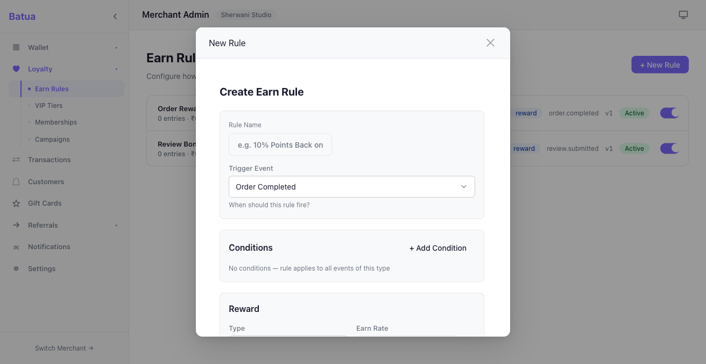
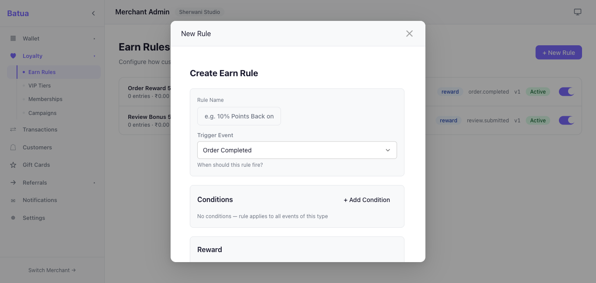
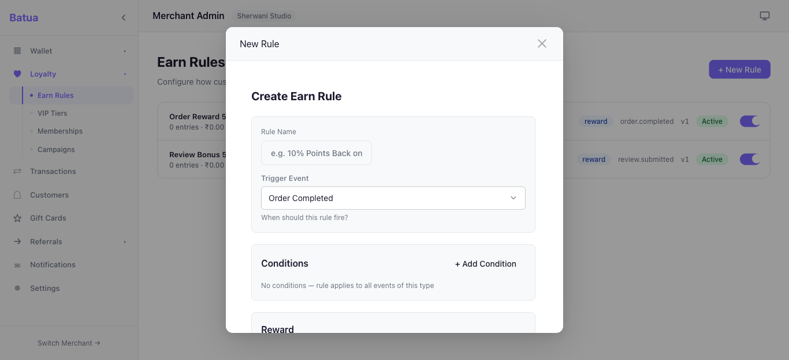
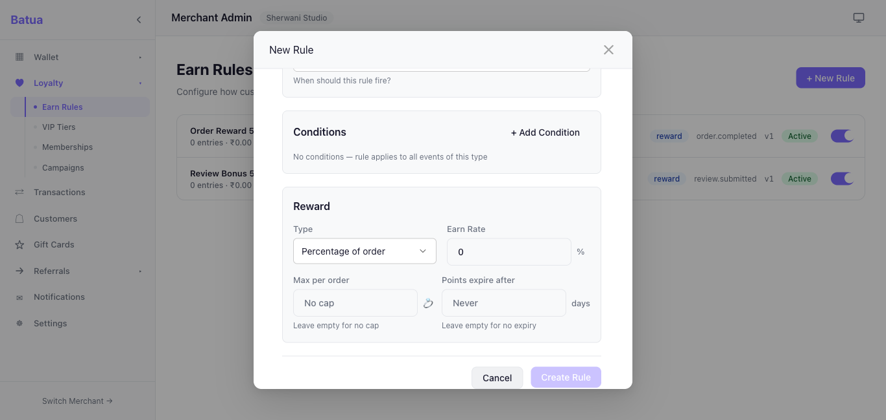

Viewport: 1366 × 650 (simulating user's Chrome with tabs/bookmarks) • 31 March 2026
+layout.svelte (admin): Added :global(.modal .modal-content) with max-height: calc(100vh - 96px) !important, margin: 48px auto !important, border-radius, and overflow: hidden. This uses Svelte's :global() which compiles into the component bundle — no CSS caching issues.+layout.svelte (admin): Added :global(.modal .slot-content) with flex: 1 !important; min-height: 0 !important so content scrolls within the constrained modal.app.css: --modal-fit-content-max-height: calc(100vh - 96px), --modal-header-border-radius, --modal-footer-border-radius, --modal-content-overflow: hiddencustomers/+page.svelte + WalletActionModal.svelte: Replaced 85vh overrides with calc(100vh - 96px)/admin/rules → Click "+ New Rule" • Modal size: fit-content • Content overflows → scrollable




/admin/customers → Click any customer row • Modal size: fit-content / large • Content overflows → scrollable